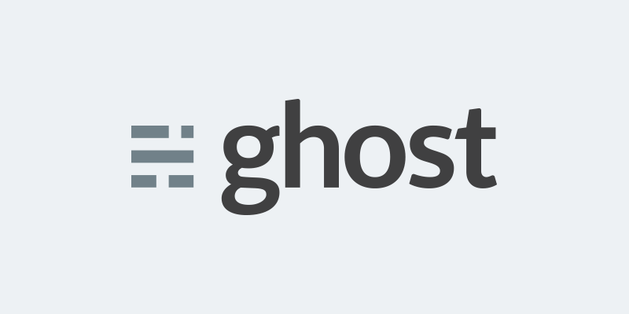

Ghost Blog¶
{kind=link}
Install¶
http://docs.ghost.org/fr/installation/linux/
install node et npm
curl --silent --location https://deb.nodesource.com/setup_0.12 | sudo bash -
apt-get install nodejs
unzip in /var/www
cd /var/www
npm install --production/development
npm start (need to be in /var/www)
Url configured as: http://localhost:2368
Accessing Ghost from the outside¶
in /var/www/config.js
server: {
// Host to be passed to node's `net.Server#listen()`
host: '0.0.0.0',
// Port to be passed to node's `net.Server#listen()`, for iisnode set this to `process.env.PORT`
port: '2368'
},
Accessing Ghost from port 80 with Apache¶
dans /etc/apache2/sites-enabled/000-default.conf
....
ServerName lulu116.ddns.net
ProxyPass / http://127.0.0.1:2368/
ProxyPassReverse / http:/127.0.0.1:2368/
</VirtualHost>
a2enmod proxy proxy_http
service apache2 restart
install ghost as a service¶
http://docs.ghost.org/fr/installation/deploy/
attention dans le script d’init remplacer VERBOSE = yes par VERBOSE=yes.
NODE_ENV=development
ghost auto start¶
update-rc.d ghost defaults
update-rc.d ghost enable
edit /var/www/config.js to set the correct url
Markdown guide :¶
Designers Guide to theming¶
http://themes.ghost.org/v0.6.0/docs/about
bower : A package manager for the web¶
Bower works by fetching and installing packages from all over, taking care of hunting, finding, downloading, and saving the stuff you’re looking for. Bower keeps track of these packages in a manifest file, bower.json
npm install bower
bower install